Инструкция по подключению
Как за 15 минут подключить сайт, начать видеть продажи по каждому источнику и доверить рекламные бюджеты ИИ-агенту — со скриншотами каждого шага.
Код на сайт, заявки и продажи, UTM-метки. После этого CRM видит, откуда пришёл каждый покупатель.
Часть 2 · 5–20 минутРеклама и ИИ-агентУчебный кабинет, подключение Директа, VK, Google и Telegram, правила для агента.
Подключение сайта
Код CRM — одна строка. Он собирает визиты, источники (реклама, поиск, соцсети, UTM), поведение на страницах и заявки из форм. Продажи привязываются к визиту, поэтому вы видите не «клики», а выручку по каждому источнику и кампании.
1Зарегистрируйтесь
Откройте страницу регистрации, укажите название компании, имя, email и пароль. 14 дней — бесплатно и без карты.

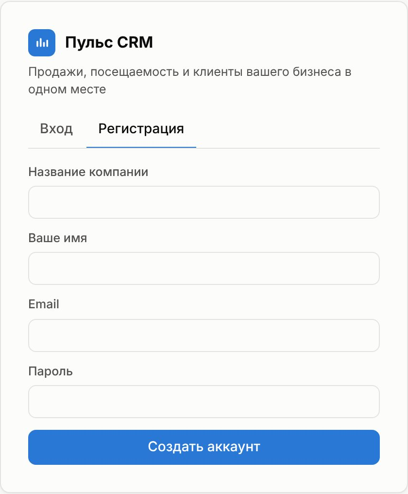
После регистрации на почту придёт письмо с кодом для сайта и тремя шагами до первого отчёта. Сотрудников можно пригласить позже в разделе Настройки.
2Скопируйте код для сайта
В меню слева откройте Компания → Подключение. Сайт «Мой сайт» уже создан. На вкладке «1. Код на сайт» нажмите «Копировать».

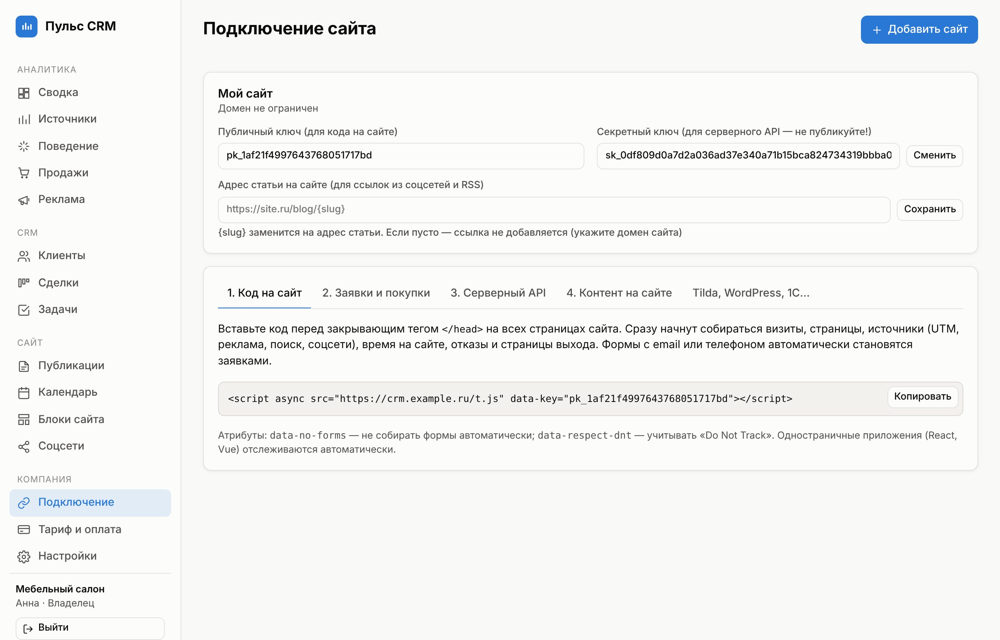

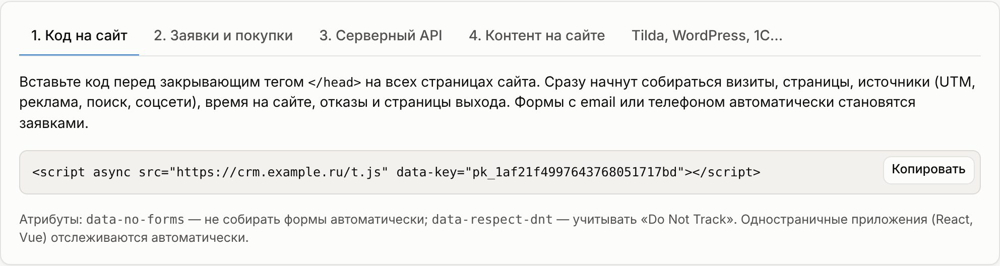
3Вставьте код на сайт
Код нужен на всех страницах сайта, в блоке <head>. Обычно для этого есть одно поле в настройках конструктора — вставлять на каждую страницу не нужно.

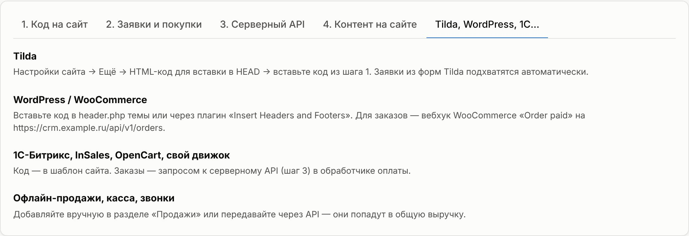
Tilda
- Откройте проект → Настройки сайта → Ещё.
- В пункте «HTML-код для вставки внутрь HEAD» нажмите «Редактировать» и вставьте код.
- Сохраните и нажмите «Опубликовать все страницы» — без переопубликации код не появится.
Заявки из форм Tilda попадут в CRM автоматически, отдельно настраивать ничего не нужно.
WordPress / WooCommerce
- Установите плагин для вставки кода в шапку (например, «WPCode» или «Insert Headers and Footers»).
- Вставьте код в поле Header и сохраните.
- Если пользуетесь кеширующим плагином — очистите кеш.
Без плагина: Внешний вид → Редактор файлов темы → header.php, вставить перед </head>. При обновлении темы правка может пропасть, поэтому плагин надёжнее.
1С-Битрикс
- Рабочий стол → Настройки → Настройки продукта → Сайты → Шаблоны сайтов.
- Откройте активный шаблон и вставьте код перед
</head>в «Внешний вид шаблона». - Сохраните и сбросьте кеш (Настройки → Автокеширование → Очистка файлов кеша).
Другие конструкторы (InSales, Wix, Craftum, OpenCart и др.)
Ищите в настройках пункты «Счётчики», «Код в head», «Вставка кода» или «Метрика и аналитика» — туда же, куда обычно вставляют код Яндекс Метрики. CRM работает параллельно с Метрикой и не мешает ей.
Свой сайт (HTML, React, Vue)
Вставьте строку в общий шаблон перед </head>. Переходы внутри одностраничных приложений отслеживаются автоматически.
4Проверьте, что данные идут
- Откройте свой сайт в обычном окне браузера (не через «просмотр кода» конструктора) и пройдите по 2–3 страницам.
- В CRM откройте Аналитика → Сводка: в строке «Сейчас на сайте» появится 1 посетитель, через минуту — визит в отчётах.
Данные не появились — что проверить
- Сайт переопубликован? В Tilda и большинстве конструкторов код появляется только после публикации.
- Включён блокировщик рекламы? Проверьте в другом браузере или с телефона.
- Указан домен у сайта в CRM? Если да — данные принимаются только с этого домена и его поддоменов. Тестовый адрес конструктора (например,
project123.tilda.ws) нужно либо убрать из ограничения, либо проверять на основном домене. - Код целиком? Строка должна начинаться с
<scriptи заканчиваться</script>.
5Заявки и продажи
Заявки собираются сами: любая отправленная на сайте форма с email или телефоном становится заявкой и карточкой клиента в разделе CRM → Клиенты, с источником, откуда человек пришёл.
Продажи нужно передать, чтобы CRM считала выручку по источникам. Проще всего — одной строкой на странице «Спасибо за заказ»:
<script>
crm('purchase', { id: 'НОМЕР_ЗАКАЗА', amount: СУММА, email: 'email покупателя' });
</script>Номер, сумму и email подставляет ваш сайт (в шаблоне страницы «Спасибо» они обычно уже доступны). Готовые примеры — на вкладке «2. Заявки и покупки»:

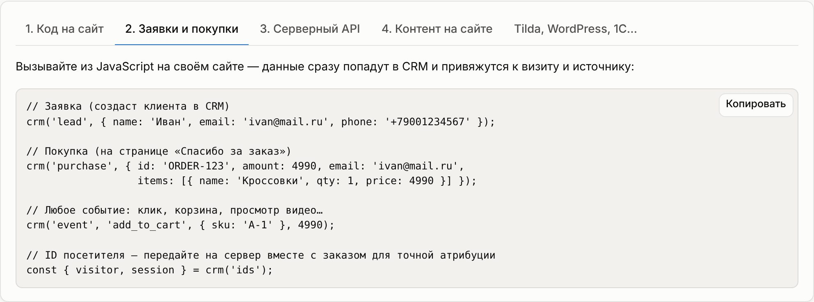
Нет интернет-магазина? Продажи по телефону, в офисе или через мессенджеры добавляйте вручную в Аналитика → Продажи → «Добавить продажу», выбрав клиента — CRM свяжет продажу с источником, откуда клиент когда-то пришёл.
6Продажи с сервера магазина · для программиста, необязательно
Самый точный способ: магазин сам сообщает CRM об оплате, возврате или отмене. Работает, даже если покупатель закрыл вкладку до страницы «Спасибо». Передайте программисту вкладку «3. Серверный API» — там готовый пример запроса с вашим ключом.

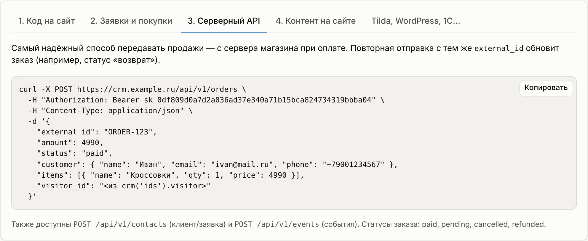
Повторная отправка с тем же номером заказа обновит его — так передаются возвраты и отмены. Для WooCommerce достаточно вебхука «Заказ оплачен» на адрес из примера.
7UTM-метки в рекламе
Чтобы CRM понимала, какая именно кампания принесла заказ, добавьте к ссылкам в объявлениях метки:
https://ваш-сайт.ru/?utm_source=yandex&utm_medium=cpc&utm_campaign=Поиск — брендовые запросыutm_source— площадка:yandex,vk,google,telegram;utm_medium— тип:cpcдля платной рекламы;utm_campaign— название кампании точно как в рекламном кабинете (или любое своё — тогда укажите его в CRM, см. «Связь кампаний с продажами»).
yclid и gclid), но тогда видна только площадка, а не конкретная кампания. Для работы ИИ-агента метка utm_campaign обязательна.8Несколько сайтов
В разделе Подключение нажмите «Добавить сайт». У каждого сайта свой код; отчёты можно смотреть по одному сайту или по всем сразу. Число сайтов зависит от тарифа.

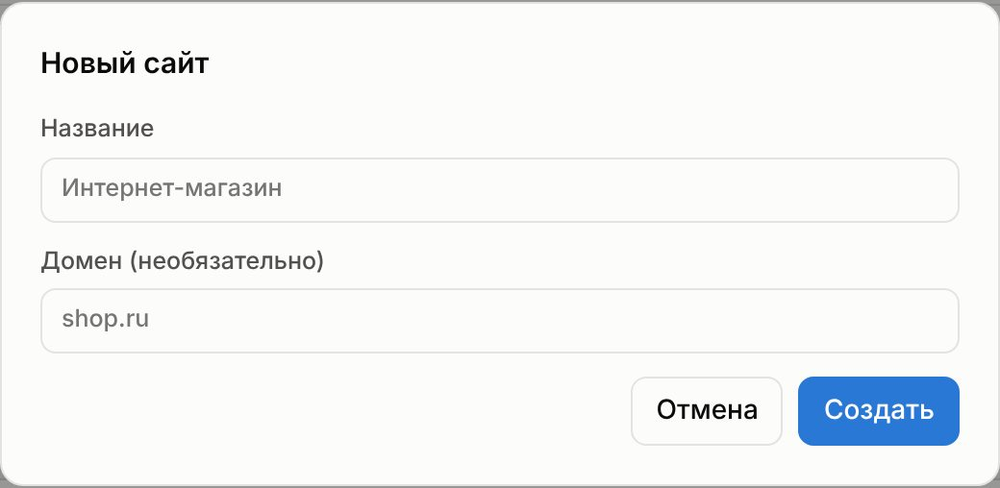
9Что вы увидите
Сводка — выручка, заказы, конверсия, визиты и отказы с изменением к прошлому периоду, воронка от визита до заказа:

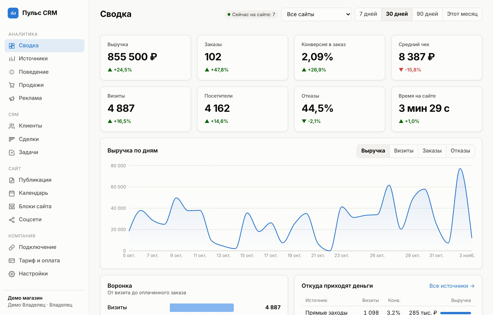
Источники — сколько визитов и сколько денег принёс каждый канал и каждая кампания:

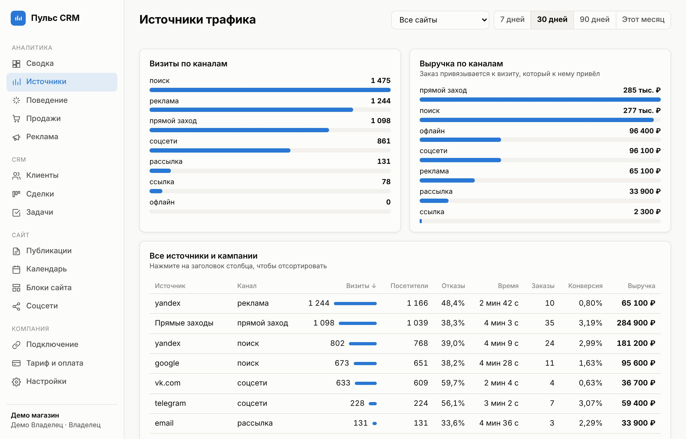
В разделе Поведение — страницы, с которых чаще всего уходят, в Клиенты — история визитов каждого покупателя. Каждый понедельник владельцу приходит письмо с итогами недели.
Реклама и ИИ-агент
Раздел Аналитика → Реклама собирает расходы из рекламных кабинетов и сравнивает их с реальной выручкой из CRM. ИИ-агент каждый день решает, куда добавить бюджет, где урезать и что выключить, — строго в рамках ваших правил. Перед этим шагом желательно выполнить часть 1: без продаж в CRM агенту не на что опираться.
1Как работает агент

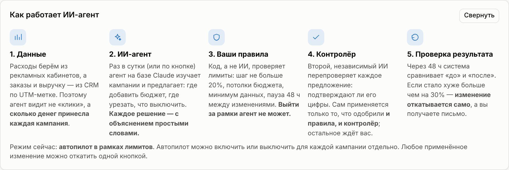
- Данные. Расходы и клики — из кабинетов (обновляются каждые 6 часов), заказы и выручка — из CRM.
- ИИ-агент раз в сутки (или по кнопке «Запустить анализ») изучает кампании и предлагает изменения. Каждое — с причиной и ожидаемым эффектом простыми словами.
- Ваши правила. Лимиты проверяет программа, а не ИИ: шаг изменения, потолки бюджета, минимум данных. Выйти за них агент не может.
- Контролёр — второй, независимый ИИ — перепроверяет каждое предложение по цифрам.
- Проверка результата. Через 48 часов система сравнивает «до» и «после» и при ухудшении сама возвращает прежние настройки — и присылает письмо.
Сам применяется только то, что одобрили и правила, и контролёр, и только на кампаниях, где вы включили автопилот. Всё остальное ждёт вашего решения.
2Начните с учебного кабинета
Чтобы понять, как всё устроено, не рискуя деньгами, в разделе Реклама нажмите «Создать учебный кабинет»:

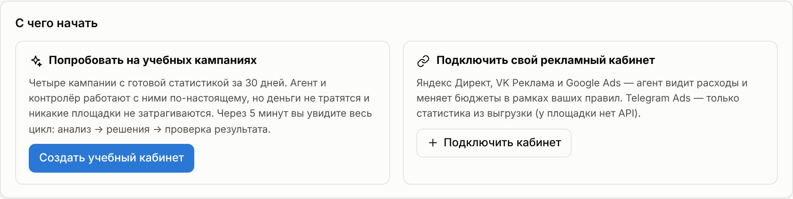
Появятся четыре кампании со статистикой за 30 дней и подсказки — что делать дальше:

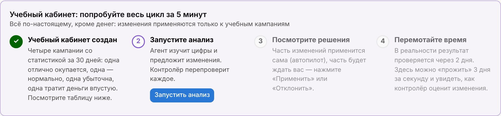
Кампании специально разные: одна отлично окупается, одна — нормально, одна в убыток, одна тратит деньги впустую. Колонка «На 1 ₽ рекламы» показывает, сколько рублей выручки вернул каждый рубль расхода: больше 1 — реклама окупается.

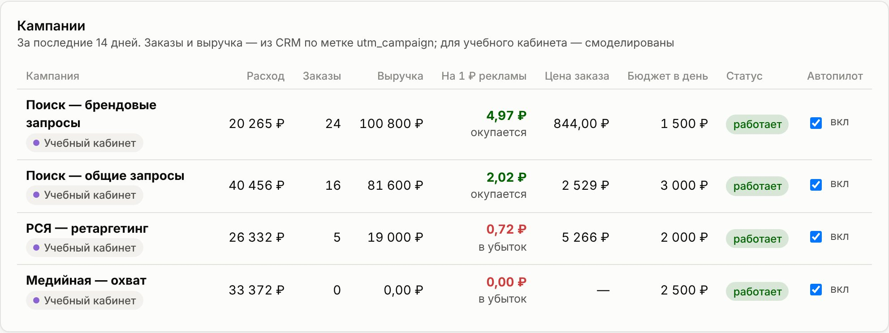
Нажмите «Запустить анализ». Агент работает 1–3 минуты, страница обновится сама:

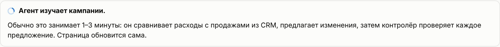
Дальше вы увидите отчёт агента, применённые изменения и те, что ждут вас (подробно — в шаге 9). Последний шаг тура — «Перемотать на 3 дня вперёд»: в учебном кабинете можно «прожить» 3 дня за секунду и увидеть, как контролёр проверит результат.
3Подключение Яндекс Директа
CRM работает с Директом через его официальный API. Для этого нужен OAuth-токен. Один раз это займёт 10–20 минут, плюс время на одобрение заявки Яндексом.
- Зарегистрируйте приложение. На oauth.yandex.ru под логином, у которого есть доступ к рекламному кабинету, создайте приложение «Для доступа к API или отладки» и отметьте доступ «Использование API Яндекс Директа». Сохраните ClientID приложения.
- Подайте заявку на доступ к API в веб-интерфейсе Директа: раздел «Инструменты» → «API», укажите ClientID приложения. Яндекс проверяет заявку — обычно от нескольких часов до нескольких дней.
- Получите токен. Откройте в браузере ссылку (вместо
ClientID— ваш):
Разрешите доступ — на странице появится токен. Скопируйте его.https://oauth.yandex.ru/authorize?response_type=token&client_id=ClientID - Подключите в CRM: Реклама → Кабинеты → «Подключить», вкладка «Яндекс Директ», вставьте токен. Агентствам — ещё и логин клиента.

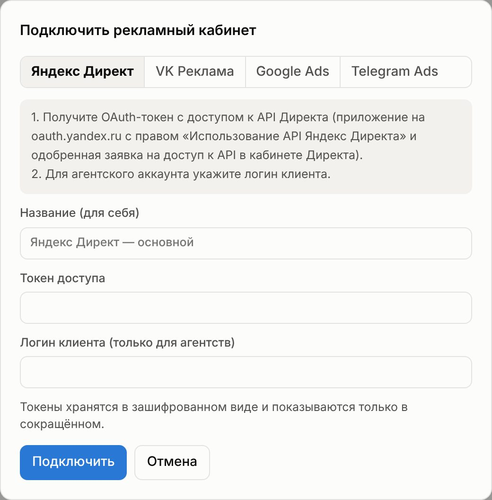
Сразу после подключения CRM загрузит кампании и статистику за 30 дней. Если появилась ошибка — она будет видна в карточке кабинета: чаще всего это ещё не одобренная заявка или токен от другого логина.
Официальная документация: «Как начать работу с API Директа».
4Подключение VK Рекламы
- Доступ к API VK Рекламы выдаётся по запросу: напишите в поддержку кабинета ads.vk.com, что хотите управлять кампаниями через API из своей CRM.
- После одобрения в настройках кабинета, в разделе «Доступ к API», появятся данные приложения, по которым выпускается токен доступа.
- В CRM: Реклама → «Подключить», вкладка «VK Реклама», вставьте токен.

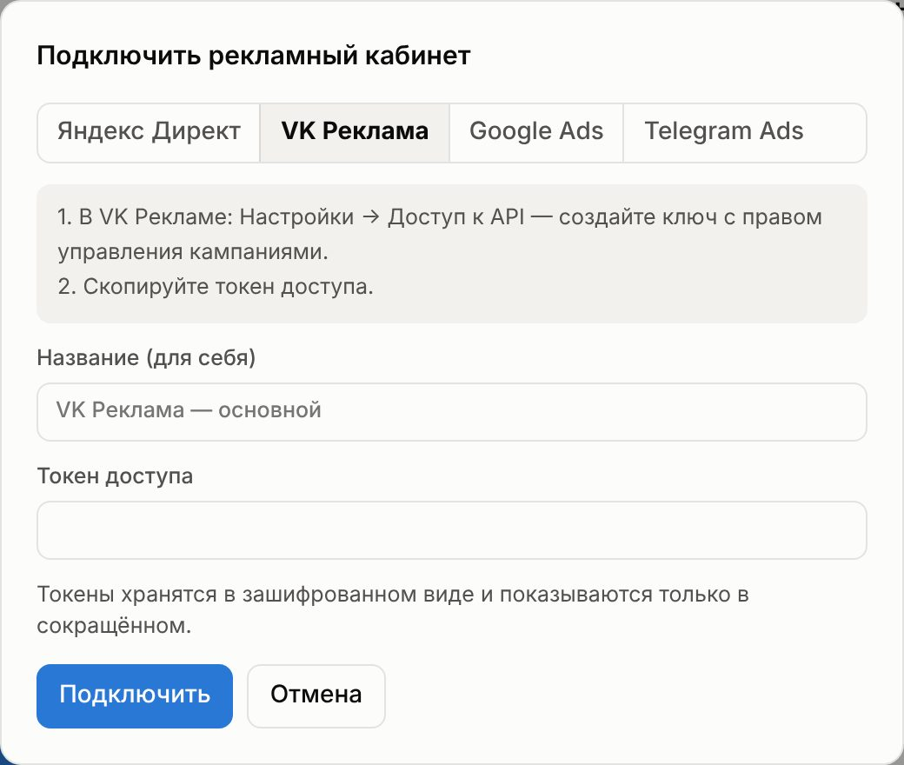
5Подключение Google Ads
- Администратор сервера CRM один раз указывает данные разработчика Google Ads API (developer token и OAuth-клиент) — для облачной версии это уже сделано.
- Вы получаете refresh-токен своего аккаунта Google Ads по инструкции Google.
- В CRM укажите ID клиента (10 цифр вверху кабинета Google Ads, например
123-456-7890), refresh-токен и, если вход через управляющий аккаунт (MCC), его ID.

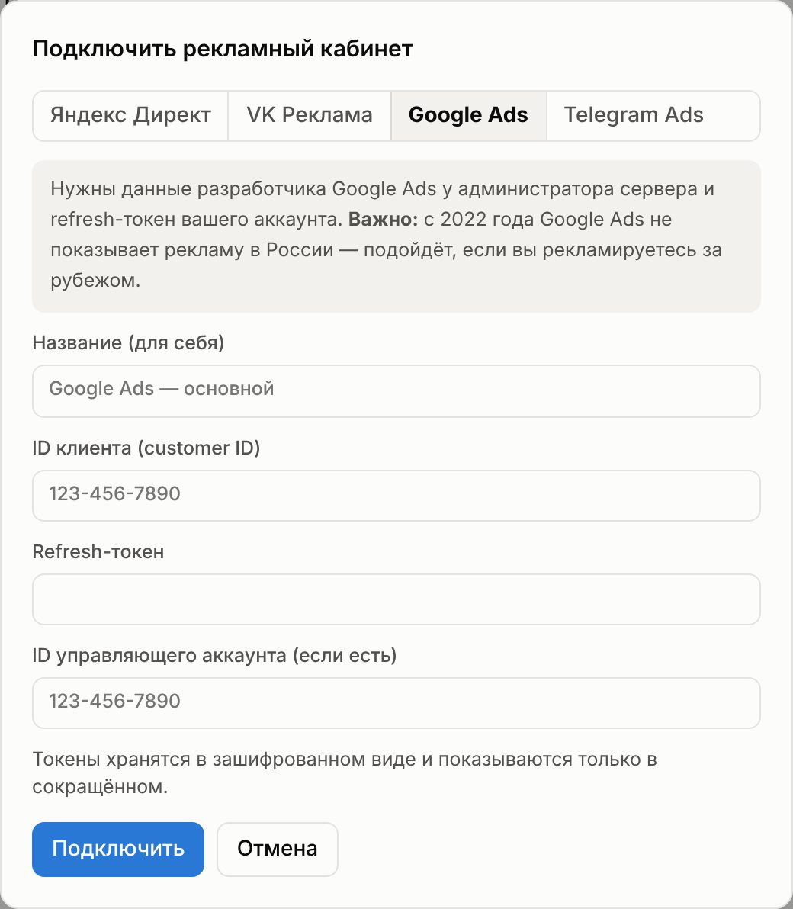
6Telegram Ads — статистика из файла
У Telegram Ads нет открытого API, поэтому агент не может менять там бюджеты сам. Но он учтёт расходы в анализе и подскажет, что сделать вручную.
- В CRM: Реклама → «Подключить», вкладка «Telegram Ads», введите название.
- В кабинете Telegram Ads выгрузите статистику по дням в CSV.
- Загрузите файл в открывшемся окне (или позже — кнопка «Загрузить CSV» в карточке кабинета). Нужны столбцы: дата, кампания (или объявление), расход; показы и клики — по желанию.

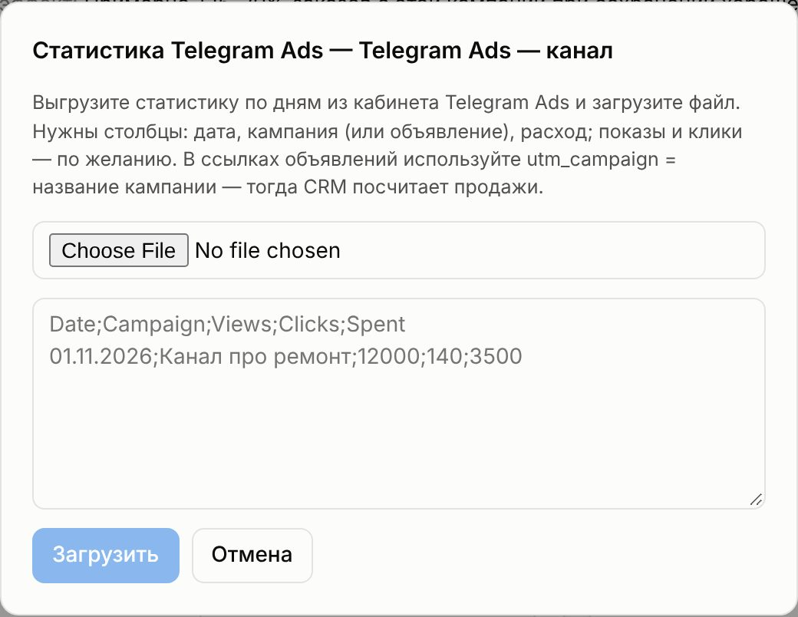
Обновляйте файл раз в несколько дней. В ссылках объявлений ставьте utm_campaign = название кампании из файла.
7Связь кампаний с продажами
Агент считает окупаемость по выручке из CRM. Чтобы найти заказы кампании, CRM ищет визиты с utm_campaign, равным её названию. Если в ссылках стоит другая метка (например, латиницей brand_search), нажмите на строку «utm: …» под названием кампании в таблице и укажите метку.
utm_campaign приходят визиты.8Правила для агента
Карточка «Правила для агента» внизу страницы. Эти лимиты проверяет программа — ИИ не может их обойти.

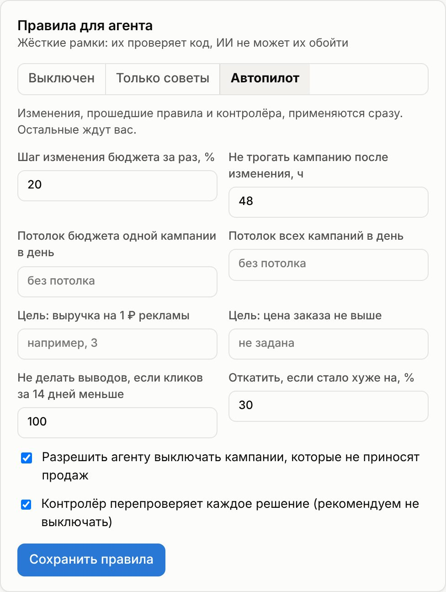
| Настройка | Что значит | С чего начать |
|---|---|---|
| Режим | Только советы — агент предлагает, применяете вы. Автопилот — одобренное правилами и контролёром применяется сразу. Выключен — агент не запускается. | Первую неделю — «Только советы», потом автопилот |
| Шаг изменения бюджета | На сколько процентов агент может изменить бюджет за один раз | 20% |
| Не трогать после изменения | Пауза, чтобы успела накопиться статистика; через это же время проверяется результат | 48 ч |
| Потолок одной кампании / всех кампаний | Больше этого дневного бюджета агент не поставит никогда — даже по вашему подтверждению | Ваш реальный максимум в день |
| Цель: выручка на 1 ₽ рекламы | Ориентир окупаемости. 3 — каждый рубль рекламы должен приносить 3 ₽ выручки | Зависит от наценки; с маржой 30% окупаемость начинается примерно с 3,3 |
| Цель: цена заказа не выше | Сколько вы готовы платить рекламе за один заказ | По желанию |
| Минимум кликов за 14 дней | Меньше — данных мало, агент кампанию не трогает | 100 |
| Откатить, если хуже на | Порог ухудшения окупаемости, после которого изменение отменяется само | 30% |
| Выключать кампании | Можно ли агенту останавливать кампании без продаж. Последнюю работающую кампанию он не выключит | Включено |
| Контролёр | Второй ИИ перепроверяет каждое решение | Не выключать |
9Решения агента, подтверждение и откат
После анализа появляется отчёт агента — коротко, что он увидел и что сделал:

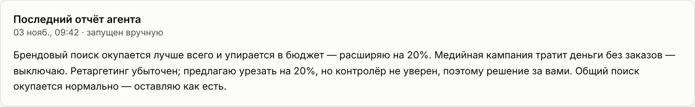
Изменения, которые агент не применил сам, собраны в блоке «Ждут вашего решения». У каждого видно, что предлагается, почему, и цепочка проверок: агент предложил → правила → контролёр → решение → проверка результата.

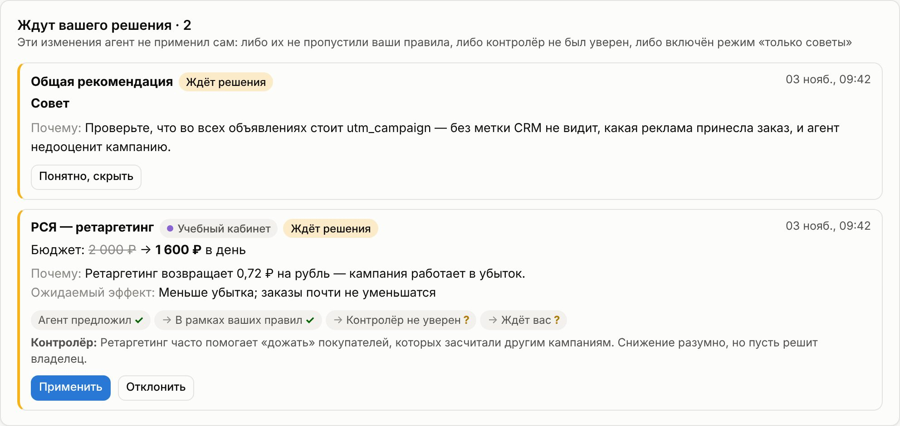
Применённые изменения — в «Истории решений». Любое можно вернуть кнопкой «Откатить»:

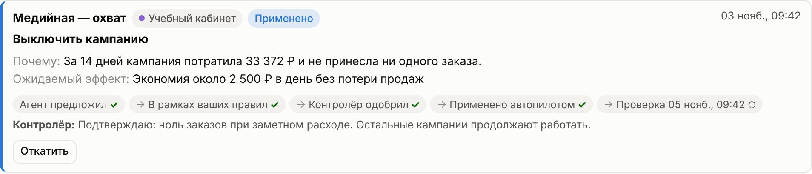
Через заданное время (по умолчанию 48 ч) система сравнивает результат. Если стало хуже порога — возвращает прежние настройки и присылает письмо. Если заказов слишком мало для честного сравнения, проверка откладывается (до недели), а не выносит случайный вердикт.

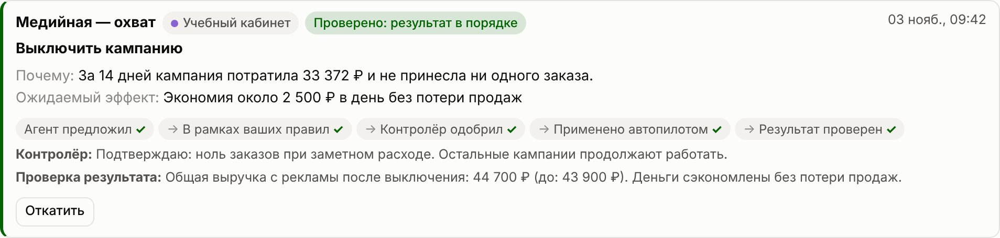
| Статус | Что значит |
|---|---|
| Ждёт решения | Нужно ваше «Применить» или «Отклонить» |
| Применено | Изменение в кабинете, ждёт проверки результата |
| Проверено: результат в порядке | Изменение оставлено |
| Откатено контролёром | Стало хуже — вернули как было, вам пришло письмо |
| Отклонено правилами | Предложение нарушало потолки бюджета или минимум площадки — не применялось |
| Ошибка применения | Площадка не приняла изменение (например, истёк токен) — причина указана в карточке |
Частые вопросы
Может ли агент потратить больше, чем я разрешил?
Нет. Потолки бюджета проверяет программа перед каждым изменением — и для агента, и для ваших ручных подтверждений. Агент меняет только дневные бюджеты и включает/выключает кампании; ставки, объявления, ключевые слова и платёжные данные он не трогает.
Что если агент ошибётся?
Три уровня защиты: правила в коде, независимый контролёр и автоматическая проверка результата с откатом. Плюс любое изменение можно откатить вручную одной кнопкой, а режим «Только советы» не даёт агенту менять что-либо без вас.
Как часто работает агент?
Раз в сутки автоматически, если режим не «Выключен». Плюс в любой момент — кнопкой «Запустить анализ» (до 6 раз в час).
Почему у кампании 0 заказов, хотя продажи с рекламы есть?
CRM не нашла визиты с меткой этой кампании. Проверьте utm_campaign в ссылках объявлений и сопоставление в таблице кампаний (шаг 7), а также что продажи передаются в CRM (часть 1, шаг 5).
Где хранятся токены рекламных кабинетов?
В базе CRM в зашифрованном виде, в интерфейсе показываются только в сокращённом. Удалить подключение можно в любой момент — в самом рекламном кабинете при этом ничего не меняется.
Кто в команде что может?
Подключать кабинеты, менять правила и автопилот — владелец и администраторы. Запускать анализ, применять и откатывать изменения — ещё и менеджеры. Наблюдатели только смотрят.
Остались вопросы — ответьте на любое письмо от Пульс CRM, мы поможем с подключением.